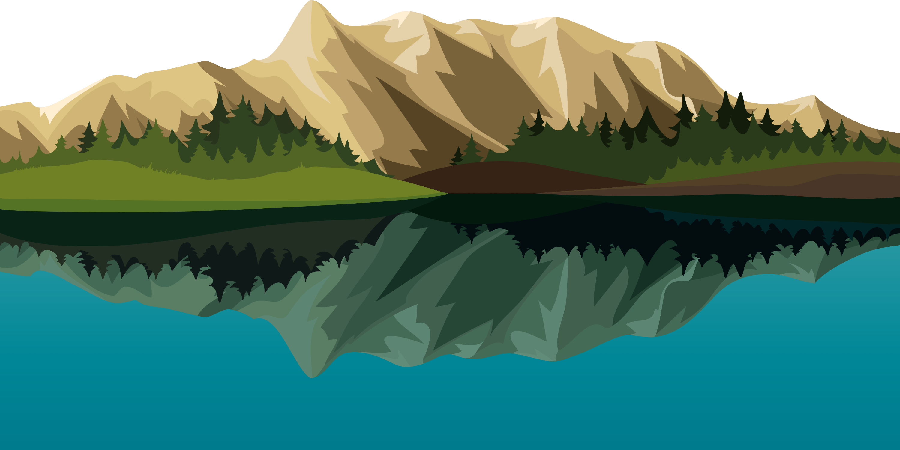
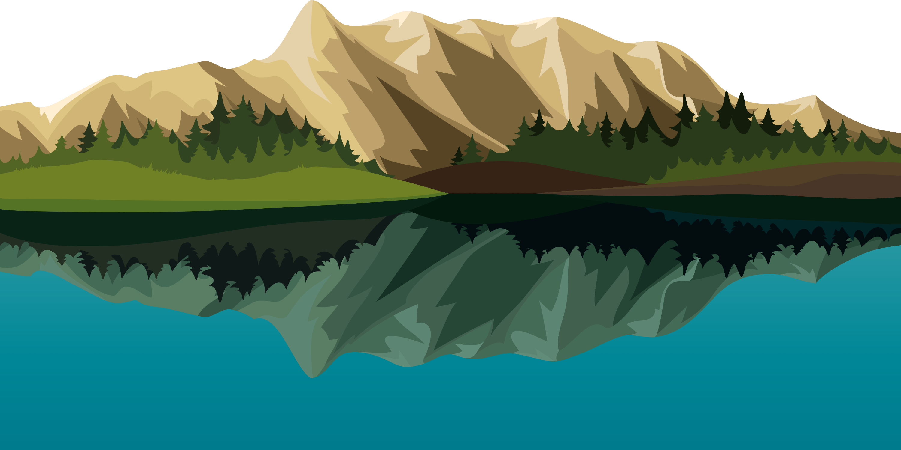
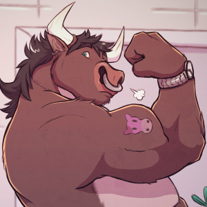
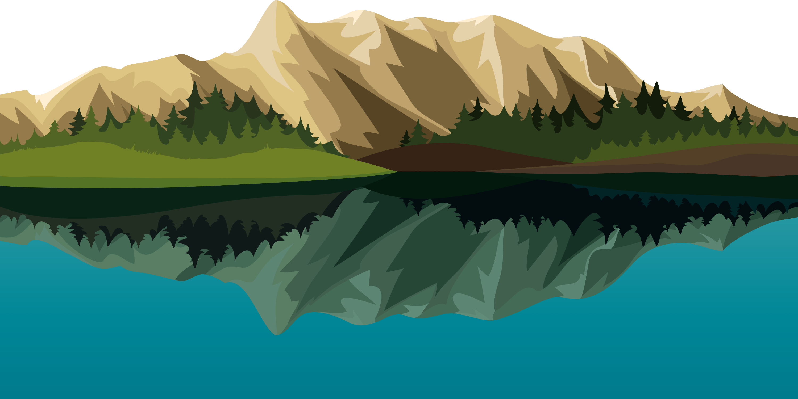
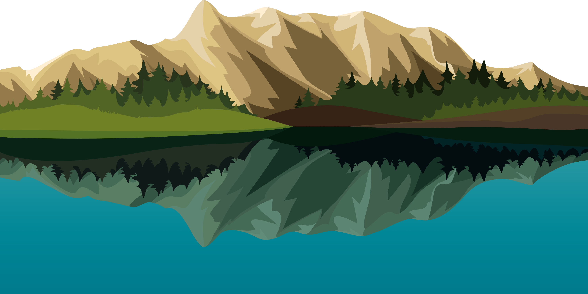
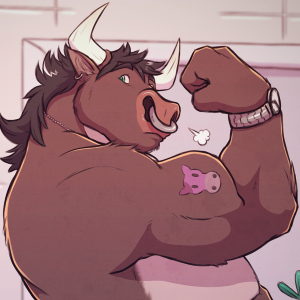

I am a mathematics first kinda programmer who believes in pursuing hobbies to color the code I write in effulgent hues. I love to lift weights, run, grow mushrooms, play trombone and white-water-raft. I am a primal who has a drive to connect the new world with the old. Next on my list to learn is Yoga and Python!
I enjoy focusing on lifting heavy while maintaining reps. Bench press, military press, deadlifts, chin-ups, decline situps, and single-arm dumbbell are some of my favorite excercises. I want to be able to do unassisted pull ups and do headstands.
I grow my own mushrooms from near stratch. Here is a bucket of Lion's Mane that is fruiting thanks to a bucket of Master's Mix sanitized at 15psi for over 2 hours.